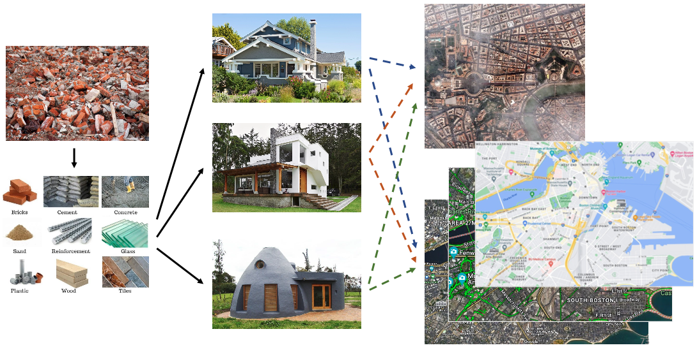
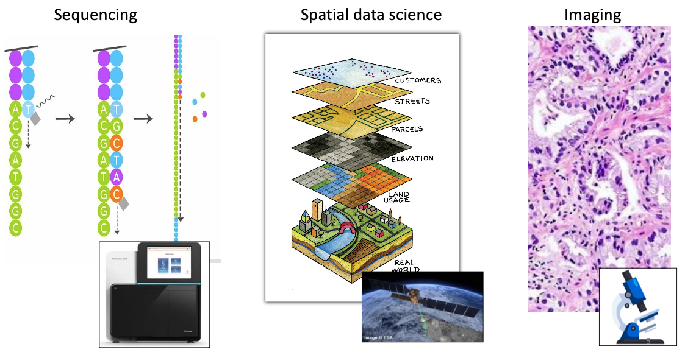
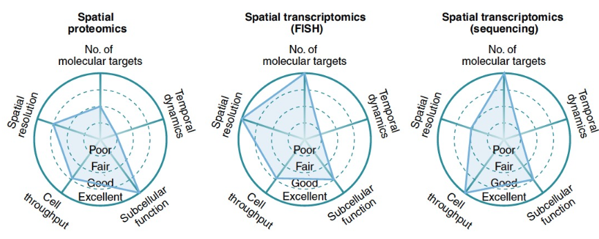
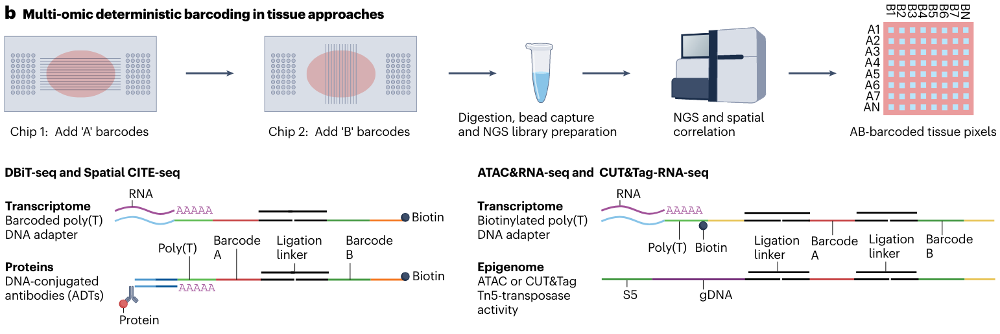

4 Spatial omics technologies
Ruben Dries
August 5th 2024
4.2 Short summary
4.2.1 Why do we need spatial omics technologies?
Spatial omics allows us to examine the role of one or more cells within its normal context. This spatial context is typically organized at multiple length scales, and considers both adjacent neighboring cells and larger levels of tissue organization.

4.2.2 What is spatial omics?
Spatial omics is typically a combination of spatial sequencing and/or imaging together with understanding the obtained results through spatial data science.

4.2.3 What are the main spatial omics technologies?
The large majority - and most popular or accessible - spatial technologies are:
- spatial antibody-multiplex proteomics
- spatial multiplex in situ hybridization (ISH)-based transcriptomics
- spatial sequencing-based transcriptomics

4.2.4 Other Spatial omics: ATAC-seq, CUT&Tag, lipidomics, etc
A growing number of other spatial technologies exist that profile different types of molecular analytes. One example is using a deterministic barcoding approach (Rong Fan’s group) to explore open (ATAC-seq) or modified (CUT&Tag) chromatin in a spatially aware manner.
